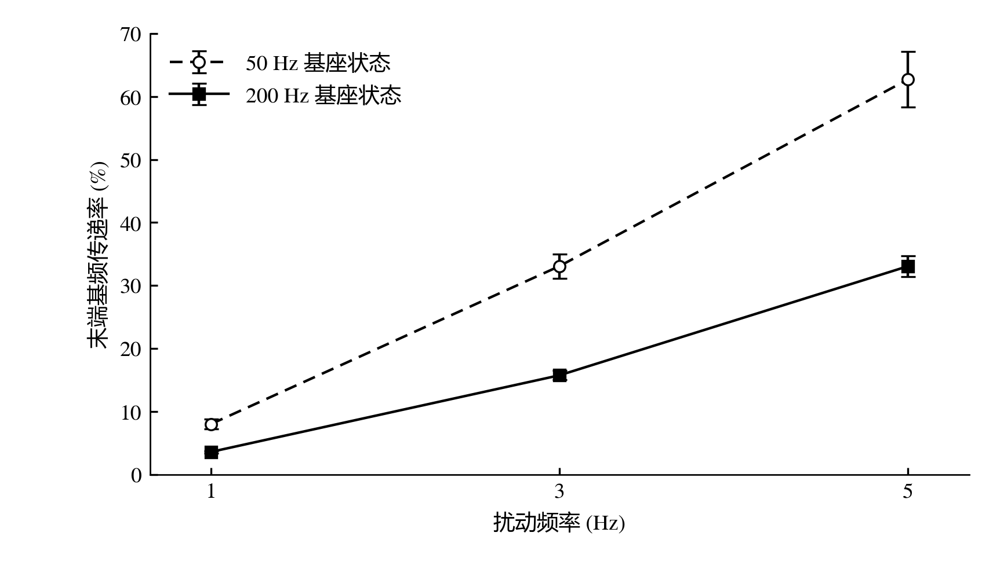
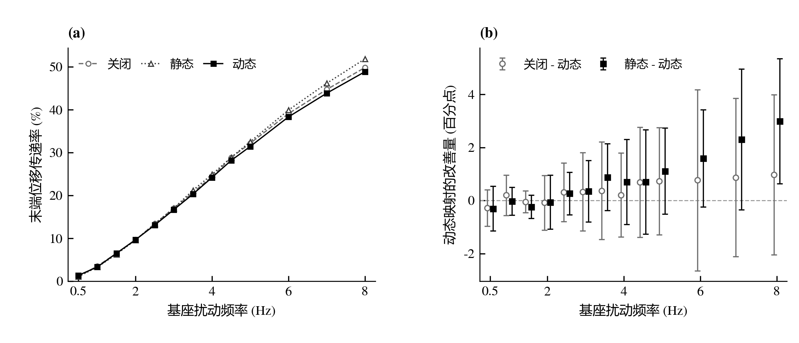
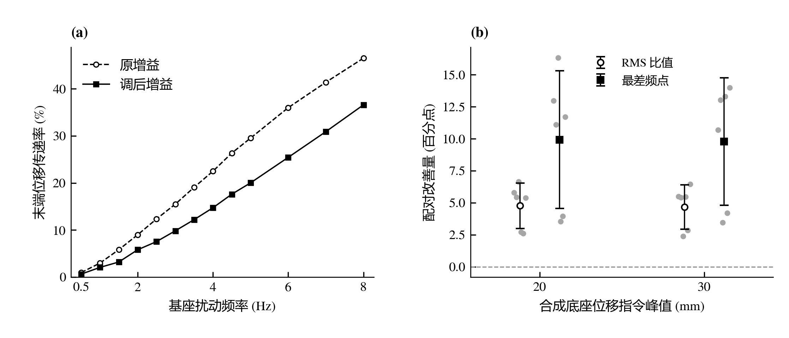
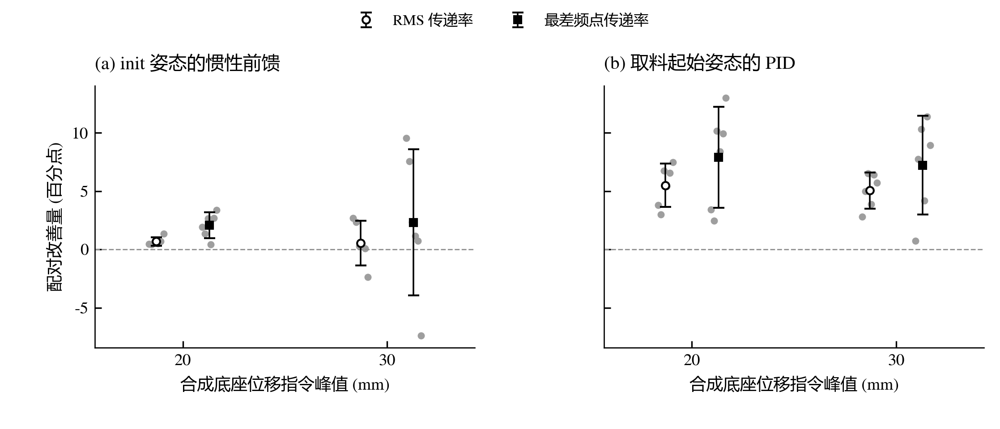

UR5e 末端抗扰的动力学前馈与反馈调节
基座平移扰动下的 Gazebo 仿真试验
摘要针对龙门平移引起的 UR5e 末端位姿偏差，采用世界系 PID 反馈与动力学前馈。参考导纳控制的力到运动映射，将模型力矩转换为关节位置补偿。底座状态由 50 Hz 提至 200 Hz 后，3 Hz 和 5 Hz 的末端传递率分别下降 17.3 和 29.7 个百分点。反馈调参使 X、Y 向末端位移 RMS 降低约三成。随后以相同采样相位做开关对照，按姿态与扰动方向标定惯性补偿。最终配置的独立验收覆盖 init 的 X、Y、Z 和取料起始姿态的 Y，在 20、30 mm 多频扰动下，开启惯性前馈使末端三维位移 RMS 的组均值降低 5.1% 至 23.9%。
1 引言Introduction
龙门平移会带动机械臂基座，使末端偏离世界坐标系中的目标。本研究用位姿反馈纠偏，并用含末端负载的动力学模型估计关节补偿力矩。参考导纳控制中从力到运动的关系[1]，通过关节弹簧–阻尼模型将力矩换算为位置前馈。试验依次考察底座状态更新率、反馈调参和惯性前馈各自对末端误差的影响。
2 方法Methodology
2.1 世界系反馈与关节动力学前馈
外环由世界系位姿误差 e 及其限幅积分 Ie 形成 PID 反馈，并用基座运动形成运动学前馈。令 ve 为末端世界系速度在控制坐标系中的表示，vb→e 和 ab→e 为换算到末端的基座运动信号，则笛卡尔速度指令为
速度指令经逆运动学和积分得到关节参考位置 qref。关节层另算两部分力矩。G 是重力项，Cq̇ 是科氏与离心项，M 是关节空间惯量矩阵。ab 表示在基座坐标系中表达的基座线加速度，平移基座的等效重力为 g − ab。
式 (2) 的各项由 KDL 根据 URDF 中的连杆质量、惯量和末端负载计算。基座只平移且末端目标固定时，参考关节加速度由阻尼最小二乘逆 J#λ 求得，右侧的零向量对应末端角加速度。
将惯性力矩限幅为 τ̃in 后，用 Gazebo 关节 PD 的比例矩阵 Pj 和微分矩阵 Dj 求位置偏置 δq。式 (4) 的动态映射按控制周期以后向欧拉更新。静态组在惯量支路采用 δq = Pj−1τ̃in，关闭组令惯量偏置为零。
2.2 扰动与配对试验
基准试验向 Y 轴施加峰值 20 mm 的正弦扰动，在 1、3、5 Hz 各做六组换序配对。先在 50 Hz 更新率下比较惯性前馈关闭、静态换算和动态映射，再固定动态映射比较 50 与 200 Hz。随后在 200 Hz 下复测三种映射，分别使用 3、5 Hz 单频和由 0.5–8 Hz 内 13 个正弦分量组成的多频波形[2]。配对组内扰动波形相同。
逐频传递率为末端位移幅值与实测底座位移幅值之比。按 ROS 时间戳用最小二乘联合拟合各正弦分量与线性漂移。多频段另报告去趋势的末端位移 RMS（均方根）、末端与底座的 RMS 比值，以及 13 个分量中最大的传递率。方括号表示配对差的 95% 置信区间，正改善量表示误差减小。
调参固定 200 Hz，每次仅更改被测轴的比例与微分增益。Y 向用两套 20 mm 波形筛选十组增益，再用独立波形在 20、30 mm 各做六组配对验证，并在取料起始姿态 1st_reco_start 复测。X、Z 向在 init 姿态使用龙门模型修正前馈，各筛选六组增益。对筛出的 X 向参数另做六组验证，复算三维位移与转角 RMS。每次只重启外环 PID，重新下发同一世界系目标，扰动前记录 2.5 s 静止位置。
新 Y 向增益下，在 init 姿态再做惯性前馈开关对照，两组均保留重力和科氏补偿。加速度来源试验采用 30 mm 多频与平滑往返脉冲，各做六组，比较原始指令、龙门模型修正和实测速度估算。实测方案用最近三个速度样本求导并经 35 Hz 一阶低通。脉冲误差以扰动前的平均末端位置为参考。
2.3 采样相位与末端位姿验收
补充试验首先重复两次关闭惯性前馈的试次，测量台架波动。开关对照固定 200 Hz 基座状态、PID 增益和重力、科氏补偿。同一组的扰动速度指令从同一仿真采样相位开始，组间覆盖 5 ms 指令周期内的五个 1 ms 相位。以 40 ms 为对齐周期，兼顾 125 Hz 机械臂状态和 250 Hz PID 循环。每组使用同一波形，两种开关次序交替。
验收用扰动前静止时的世界系末端位姿作为参考。三维位移误差取相对位置的欧氏距离，转角误差取相对四元数的最小转角。两项均报告测量窗口内的 RMS 和峰值。对照只切换惯性力矩输入，并由控制器状态确认开关实际生效。
在正常反馈闭环中，惯性力矩对末端残余误差的幅值和相位随姿态与扰动轴变化。用开关频响试验标定分轴前馈权重。需要限制横向与旋转误差的工况先取模型力矩的等效静态位置偏置 Pj−1τin，通过雅可比映射到末端，再只保留沿基座加速度方向的平移。将投影结果经逆解折算回关节位置和等效力矩，最后对标定后的力矩执行限幅和式 (4) 的动态映射。
运行时按实测关节位置和 base_link 中的主加速度方向选择标定。配方覆盖相应姿态附近的单轴平移。当实测关节偏离标定姿态或扰动方向偏离单轴条件时，惯性修正逐渐衰减。重力、科氏补偿和世界系 PID 按式 (4) 与外环控制律工作。
2.4 权重符号与平移投影的交叉试验
在 init 的 X 向和取料起始姿态的 Y 向分别固定惯性权重绝对值为 2 和 0.75。每个区组用相同的 20 mm 多频波形、相同的 200 Hz 指令采样相位和同一 PID 配置，对照正负权重与投影开关的四种组合及一个共享的零权重基线。零权重组也接收基座加速度。每个工况的五组波形覆盖五种指令采样相位，五种配置各在每个顺序位置出现一次。
试验控制器在旧加速度失效、旧偏置衰减后应答设置请求。记录原始逆动力学力矩、投影后的映射力矩、乘权重并经逐关节门控后的请求力矩，以及最小奇异值和回代前后的沿轴等效位移。沿轴复数灵敏度由正负权重的传递函数之差除以两倍权重绝对值，再除以同一组的零权重传递函数。实部为正表示正权重增加与原残差同相的分量。
3 结果Results
3.1 惯性映射与底座状态更新率
| 扰动频率 | 关闭／50 Hz | 静态／50 Hz | 动态／50 Hz | 动态／200 Hz |
|---|---|---|---|---|
| 1 Hz | 7.86 | 7.93 | 8.00 | 3.58 |
| 3 Hz | 34.09 | 33.28 | 33.08 | 15.75 |
| 5 Hz | 62.87 | 62.46 | 62.73 | 33.07 |
动态映射相对静态换算的三个末端传递率差值区间均跨零（图 1a）。在 5 Hz 下，六组试次的关节补偿峰值均值从 4.03 降至 2.50 mrad（图 1b）。

基座状态从 50 Hz 提至 200 Hz 后，3 Hz 和 5 Hz 的传递率分别下降 17.33 和 29.67 个百分点（图 2）。独立启动复测中，这两个频点也观察到下降。

| 扰动工况 | 关闭 (%) | 静态 (%) | 动态 (%) | 关闭 − 动态（百分点） |
|---|---|---|---|---|
| 3 Hz 单频 | 16.25 | 16.07 | 16.57 | −0.33 [−1.57, 0.92] |
| 5 Hz 单频 | 30.48 | 33.52 | 31.00 | −0.52 [−3.45, 2.41] |
| 多频（RMS 比值） | 16.23 | 16.44 | 15.91 | 0.32 [−0.90, 1.53] |
200 Hz 下，动态映射相对关闭的单频差值和多频 RMS 差值的 95% 配对区间均跨零（表 2）。多频时末端 RMS 由 1.18 mm 变为 1.16 mm，动态映射相对静态换算的传递率改善为 0.54 [−0.39, 1.47] 个百分点。5 Hz 单频下，六组记录的关节补偿峰值均下降，均值从 4.34 降至 2.65 mrad。

3.2 Y 向 PID 与惯性前馈复测
| 指令峰值 | 末端 RMS (mm) | RMS 传递率 (%) | 最差频点传递率 (%) |
|---|---|---|---|
| 20 mm | 1.24 → 0.85 | 14.93 → 10.17 | 46.52 → 36.60 |
| 30 mm | 1.86 → 1.28 | 14.82 → 10.15 | 46.01 → 36.24 |
筛选后采用的 Y 向增益为 Kp = 12.0、Kd = 0.35，原值为 7.7 和 0.10。两种振幅下的 13 个频率成分的平均传递率均下降。20 mm 与 30 mm 的配对 RMS 传递率分别改善 4.76 [2.99, 6.53] 和 4.66 [2.93, 6.39] 个百分点，区间为 95%（图 4）。两组静止抖动均低于 0.00002 mm RMS，复测中的关节限速告警和惯量力矩钳位计数均为零。

在 init 姿态采用新 PID 后，开启动态惯性前馈使 20 mm 工况的末端 RMS 由 0.82 降至 0.76 mm，RMS 传递率改善 0.70 [0.33, 1.06] 个百分点。30 mm 的平均传递率改善 0.55 [−1.37, 2.48] 个百分点，其中一组开启后变差。
取料起始姿态复现了 PID 调参收益。20 mm 与 30 mm 工况的末端 RMS 分别由 1.32 降至 0.86 mm、由 2.00 降至 1.36 mm，RMS 传递率的配对改善分别为 5.51 [3.64, 7.38] 和 5.06 [3.51, 6.61] 个百分点。静止 RMS 由 0.233 升至 0.257 µm。两项追加复测均未记录关节限速告警或惯量力矩钳位。

3.3 加速度来源对照
| 工况与指标 | 原始指令 | 龙门模型修正 | 实测估算 |
|---|---|---|---|
| 多频 RMS | 1.123 | 1.153 | 1.123 |
| 多频峰值 | 3.102 | 3.285 | 3.105 |
| 脉冲 RMS | 0.280 | 0.273 | 0.282 |
| 脉冲峰值 | 0.967 | 0.940 | 0.964 |
实测估算相对龙门模型修正的 RMS 配对改善为多频 0.030 [−0.170, 0.230] mm、脉冲 −0.009 [−0.074, 0.056] mm。龙门模型修正相对原始指令的 RMS 配对差为多频 0.030 [−0.078, 0.139] mm、脉冲 −0.007 [−0.058, 0.044] mm。两种工况下三种来源之间的 RMS 和峰值配对区间全部跨零，现有样本未检出差异。36 段试验的惯性前馈在测量窗口内持续生效，未记录关节限速告警或力矩钳位。
3.4 X、Z 向调参与最终配置
X 向六组验证的定向 RMS 由 1.316 降至 0.864 mm，配对改善 0.452 [0.385, 0.519] mm。最差频点传递率由 59.07% 降至 38.37%，配对改善 20.70 [17.97, 23.43] 个百分点。三维位移 RMS 由 1.337 降至 0.885 mm，转角 RMS 由 2.446 降至 1.534 mrad。
Z 向筛选中，原增益的最差频点传递率最低（17.57%）。例如 (12.0, 0.20) 把定向 RMS 从 0.842 降至 0.789 mm，同时把最差频点传递率抬至 22.89%。因此沿用 Z 向原值。X、Z 共 36 段试验的拟合窗口内惯性前馈持续生效，关节限速告警与力矩钳位计数均为零。

| 轴向 | Kp (s−1) | Kd | 200 Hz 调参依据 |
|---|---|---|---|
| X | 12.0 | 0.35 | 20 mm，init 独立配对验证 |
| Y | 12.0 | 0.35 | 20、30 mm，两种姿态配对验证 |
| Z | 7.7 | 0.10 | 20 mm 筛选，保留原增益 |
3.5 标定后的惯性前馈验收
关闭前馈的重复试验中，组内 RMS 传递率差值的绝对值中位数为 0.98 个百分点，最大值为 2.84 个百分点。匹配采样相位后，中位数降为 0.17 个百分点，最大值降为 1.37 个百分点。匹配相位的全局单位增益复测中，init 的 Y 向 20、30 mm 末端位移 RMS 分别降低 4.5% 和 3.5%。
闭环试验表明，全局增益 2 会放大 init 的 X 向误差和取料起始姿态的 Y 向误差。将这两种工况的等效关节偏置投影到扰动方向后，分别采用 −2 和 −0.75 的力矩权重。init 的 Y、Z 向分别采用 2 和 1。独立验收通过常规 PID 配置选用标定，开关组共享相同的反馈参数。
| 姿态与轴向 | 峰值 | 三维位移 RMS (mm) | 配对改善与 95% 区间 (mm) | 转角 RMS (mrad) |
|---|---|---|---|---|
init X | 20 mm | 0.795 → 0.613 | 0.182 [0.143, 0.221] | 1.727 → 1.239 |
init X | 30 mm | 1.270 → 0.967 | 0.304 [0.229, 0.378] | 2.792 → 1.972 |
init Y | 20 mm | 0.858 → 0.814 | 0.044 [0.012, 0.076] | 2.112 → 1.871 |
init Y | 30 mm | 1.212 → 1.090 | 0.123 [0.010, 0.235] | 2.863 → 2.617 |
init Z | 20 mm | 1.110 → 0.942 | 0.168 [0.122, 0.213] | 2.279 → 1.828 |
init Z | 30 mm | 1.767 → 1.460 | 0.306 [0.188, 0.424] | 3.573 → 2.819 |
| 取料起始 Y | 20 mm | 0.644 → 0.547 | 0.097 [0.046, 0.149] | 2.037 → 1.598 |
| 取料起始 Y | 30 mm | 0.826 → 0.707 | 0.119 [−0.010, 0.247] | 2.657 → 2.086 |
取料起始姿态的 30 mm 工况第一轮区间略跨零，以另一组独立波形补测五组。三维位移 RMS 为 1.049 → 0.903 mm，配对改善为 0.146 [0.084, 0.207] mm，转角 RMS 为 3.374 → 2.653 mrad。含补测共 45 组，开启组每组的三维位移 RMS 均低于关闭组。各工况的平均位移峰值和平均转角峰值也下降，部分峰值差的区间仍跨零。开启组在测量窗口内持续生效，90 段均未记录关节限速告警或惯性力矩钳位。
复测默认配置时，运行 bash run.sh 新输出目录 --compare-tuned-inertia --inertia-phase-balanced。表 6 的 init X、Y、Z 三个方向分别使用 --axis x --inertia-seed 1021949、--axis y --inertia-seed 1021947 和 --axis z --inertia-seed 1021950。取料起始姿态使用 --pose 1st_reco_start --inertia-seed 1021948，追加复测改用 --inertia-seed 1022951 --inertia-peak 30。重复性对照用 --inertia-null，匹配相位的一轮附加 --inertia-phase-balanced --inertia-seed 921950。验收逐段数据与重复性逐段数据。
3.6 权重符号与平移投影的交叉对照
| 姿态与轴向 | 权重 | 平移投影 | 沿轴 RMS (mm) | 三维位移 RMS (mm) | 转角 RMS (mrad) |
|---|---|---|---|---|---|
init X | 0 | 关 | 0.741 | 0.797 | 1.635 |
init X | −2 | 关 | 0.586 | 0.924 | 2.741 |
init X | +2 | 关 | 0.937 | 0.989 | 1.551 |
init X | −2 | 开 | 0.567 | 0.618 | 1.173 |
init X | +2 | 开 | 0.948 | 1.012 | 2.198 |
| 取料起始 Y | 0 | 关 | 0.562 | 0.587 | 1.920 |
| 取料起始 Y | −0.75 | 关 | 0.419 | 0.497 | 2.017 |
| 取料起始 Y | +0.75 | 关 | 0.762 | 0.767 | 2.375 |
| 取料起始 Y | −0.75 | 开 | 0.430 | 0.462 | 1.402 |
| 取料起始 Y | +0.75 | 开 | 0.765 | 0.783 | 2.612 |
两种姿态下，负权重在开、关投影时均使沿轴 RMS 低于零权重，正权重均使其升高，四种组合与基线的沿轴配对差的 95% 区间均排除零。5 和 8 Hz 下，正权重的归一化复数灵敏度在开、关投影时均具有正的同相分量。比如 8 Hz 下，init X 的同相分量由关投影时的 0.212 变为开投影时的 0.206，取料起始 Y 则由 0.780 变为 0.729。符号对沿轴闭环误差的作用在两种映射下均出现。
固定负权重后，开投影使 init X 的三维位移 RMS 再降低 0.305 [0.238, 0.372] mm，取料起始 Y 再降低 0.034 [0.013, 0.056] mm。两者的转角 RMS 分别再降低 1.568 [1.181, 1.955] 和 0.615 [0.487, 0.743] mrad。固定负权重后单看沿轴 RMS，开关投影的配对区间均跨零。投影的主要可测收益体现在三维位置和姿态上。
两个工况的测量窗口内，雅可比最小奇异值分别为 0.2086 和 0.1521，均高于 0.05 的阻尼阈值。在 19,997 条原始沿轴偏置绝对值大于 10 nm 的投影样本中，回代增益的最大相对偏差为 2.9×10−15，未观测到反号。50 段试验均未记录关节限速告警或惯性力矩钳位。
复测使用 bash run.sh 新输出目录 --inertia-factorial-gain 2 --axis x --inertia-seed 162848，取料姿态改用 --inertia-factorial-gain 0.75 --pose 1st_reco_start --axis y。可用 python3 analyze_inertia_factorial.py 输出目录 复算配对区间和频响。原始力矩记录存于虚拟机 ~/ur5e_sim_ws/experiment_results/inertia_factorial_162848.U6PCcI/。逐段数据与诊断摘要与逐频复数响应数据。
4 讨论Discussion
基准试验中，提高底座状态更新率在 3、5 Hz 分别降低 17.33 和 29.67 个百分点的传递率，反馈调参在 X、Y 两轴各降低约三成末端 RMS。导纳式动态映射相比静态换算明显降低了关节补偿峰值，两种映射的末端误差差异在多数频点仍处于配对波动范围内。随后的采样相位对照和按姿态、方向标定减少了试验波动，并进一步降低了末端位移误差。分轴与末端投影的效果见 3.5 节。
30 mm 的 8 Hz 分量中，实测底座加速度比指令高约 15%、滞后 11.8°–12.7°。该差异在六组间相近，尚无法解释个别组的误差上升。用固有频率 20.61 Hz、阻尼比 0.25 的龙门速度环模型修正加速度后，独立验证中 8 Hz 的幅值偏差由 11.7% 降至 1.3%，相位偏差由 14.3° 降至 2.1°。修正改善了输入的准确性，三种加速度来源的末端误差差异仍在配对波动范围内。该模型在 200 Hz 发布率下辨识，拟合折入了速度指令的保持效应，发布率大幅变化时需重新辨识。标定与验证两次运行测得的台架响应相差约 2 个百分点与 1.8°，后者的机械臂挂在轨迹控制器上而未保持世界系位姿，因此单一常数模型只能把输入对齐到百分之一量级，而非千分之几。
验证范围是 Gazebo 中的单轴平移扰动与世界系定点保持，覆盖 init 附近的 X、Y、Z 及取料起始姿态附近的 Y。当前惯性前馈使用已知龙门指令经速度环模型修正后的加速度。外部冲击、底座旋转、末端轨迹跟踪、多轴同时扰动和实机性能仍需单独验证。
交叉试验支持在两个负权重工况保留平移投影。权重用于抵消实际闭环中的沿轴残差，投影用于改善修正后的三维位姿。权重大小仍按闭环试验标定。以 init 为例，固定质量和质心，只把 KDL 模型中六个臂连杆的转动惯量张量统一缩放 ±10%，单位 Y 向加速度下的静态等效沿轴偏置由 −0.0190 mm 变为 −0.0212 至 −0.0168 mm，Z 向由 +0.0995 mm 变为 +0.0940 至 +0.1050 mm。这项静态检查表明模型参数会影响补偿量，还需要独立的闭环模型灵敏度试验才能量化其对最优权重的贡献。
with_moveit_new.launch 默认采用 200 Hz。最终标定配置通过了无界面的 MoveIt → PID → MoveIt 验证，20 mm Y 向扰动在 3 Hz、5 Hz 的单次启动检查中测得末端传递率 8.02%、15.96%。加入交叉试验接口后，按正常启动流程重跑交接检查也通过。最终标定时的启动检查记录。
补充试验数据与复测设置
提频的配对改善量在 1、3、5 Hz 分别为 4.42 [3.64, 5.20]、17.33 [15.09, 19.57]、29.67 [24.42, 34.91] 个百分点，方括号是 95% 区间。主试验全程基座净移动约 56 mm。近零净位移的独立复测中，3 Hz 为 33.1% → 16.3%，5 Hz 为 62.6% → 29.3%，基座净移动 1.23 mm。
10 mm 的单次摸底覆盖 0.5、2、4、6、8 Hz，其中 8 Hz 提频前后的传递率为 94.54% 和 45.17%。30 mm、5 Hz 下分别为 60.18% 和 32.73%。
逐段记录位于 VM 的 /tmp/ur5e-mapping-rate.kzPBo9/trials.csv。复测时用 base_pose_update_rate:=200.0 调整基座频率，用 inertia_mapping_experiment:=true 启用映射切换。较早试验见仓库记录和惯量前馈配对图。

复测历史数据时，设 UR5E_BENCH_INERTIA_GAIN=1.0 使用当时的全局单位增益，并用 UR5E_BENCH_PID_PARAMS 指向试验当时的 pid_params.yaml。映射对照与原 Y 向调参使用提交 a575538 中的文件，新 Y 向增益下的对照使用 12642d7 中的文件。这几项历史试验还需设 UR5E_BENCH_BASE_RESPONSE=off，以复现当时的原始指令加速度。
200 Hz 映射对照的逐段统计和逐频拟合结果可用 bash run.sh 新输出目录 复试。绘图用 python3 analyze.py 数据目录 图像路径。原始话题位于 VM 的 /tmp/ur5e-inertia-200hz.xm0npn/results。
200 Hz 试验中，开启组在拟合窗口内的惯量前馈有效比例为 99.6% 至 100%，力矩钳位计数为零。5 Hz 单频的两段记录了关节限速告警，其中一段告警出现在拟合窗口内。全试验基座净移动 6.60 mm。
PID 调参的逐段统计和逐频结果包含筛选与独立验证。bash run.sh 新输出目录 --tune 可复试，绘图用 python3 analyze_pid.py 数据目录 图像路径。原始话题位于 VM 的 /tmp/ur5e-pid-tuning.ptyNtZ/tuning。
设为 50 Hz 更新率时，20 mm 多频扰动另做了四组配对复测。RMS 传递率由 31.42% 降至 24.81%，配对改善 6.61 [2.95, 10.27] 个百分点。最差频点的配对区间为 −5.55 至 25.83 个百分点。50 Hz 试次及逐频结果可用 UR5E_BENCH_BASE_RATE=50.0 bash run.sh 新输出目录 --validate-gains 12.0 0.35 复试。
新 PID 下惯性前馈开关的逐段统计与逐频结果可用 bash run.sh 新输出目录 --compare-tuned-inertia 复试。取料起始姿态的逐段统计与逐频结果可用 bash run.sh 新输出目录 --pose 1st_reco_start --validate-gains 12.0 0.35 --full-validation 复试。绘图用 python3 analyze_followup.py 数据目录 图像路径。原始话题位于 VM 的 /tmp/ur5e-pid-inertia-followup.bpkZvB。
加速度对照用同一拟合窗口内的基座速度相量乘以 jω，再与按原始种子重建的解析指令加速度比较。对 30 mm 开启组的 8 Hz 分量，用位移相量乘以 −ω2 交叉复算，两种估计的幅值相差不超过 0.12%，相位相差不超过 1.66°。逐频数据可用 python3 check_base_acceleration.py 原始base.csv 数据目录 输出.csv 复算。
基座响应校正的验证数据可用 bash run_verify.sh 新输出目录 复测，该脚本在每个频点上将发布的加速度与基座速度相量乘 jω 对比，并以 _base_response_frequency:=0 的未校正运行作为对照。模型由 base-acceleration-comparison.csv 的 312 行数据拟合，涵盖两种行程与开关两种状态。
三种加速度来源的配对试次可用 bash run.sh 新输出目录 --compare-acceleration-sources 复测。python3 analyze_acceleration_sources.py 原始记录目录 输出.csv 可从 ROS 记录重算峰值与 RMS。原始话题位于 VM 的 /tmp/ur5e-accel-source.k2tWhu/source-verified。
加速度来源对照与 X、Z 调参复试使用提交 43a8179 中的 PID 文件，龙门模型修正保持启用。X 向的试次与逐频数据、Z 向的试次与逐频数据可用 bash run.sh 新输出目录 --tune --axis x 或 --axis z 复测。绘图用 python3 analyze_axis_pid.py 数据目录 图像路径。原始话题位于 VM 的 /tmp/ur5e-pid-xz-tuning.F5lzOu。
常用启动可用 bash run_standard.sh 新输出目录 200 复验。交还 MoveIt 使用 roslaunch sim_bringup init_pose_start_controllers.launch mode:=moveit，待实测关节位置稳定后再规划。采样率启动检查与最终配置启动检查附有扰动响应记录。